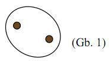
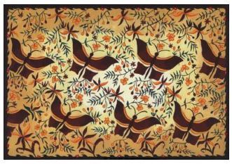

Aplikasi Refleksi
Berikut ini adalah salah satu motif batik Kawung asal Yogyakarta.
Bentuk dasarnya adalah elips dan titik (Gb 1).
Bentukan pada motif batik kawung dapat dipandang sebagai hasil refleksi (pencerminan) bentuk dasar. Hasil pencerminan gambar 1 pada garis x, y, dan z menghasilkan orientasi bentuk sebagai berikut (Gb. 2, Gb. 3, dan Gb.4).
Gabungan gambar 1, 2, 3, dan 4 menghasilkan satu bentukan pada batik kawung berikut (Gb. 5)
Berikut ini adalah salah satu motif batik Madura.
Perhatikan bentuk kupu-kupu pada motif batik Madura tersebut. Bentuk kupu-kupu tersebut simetris, sehingga dapat dipandang sebagai hasil pencerminan beberapa bangun datar terhadap sumbu simetrinya. Bentuk dasarnya adalah garis lengkung dan beberapa bentuk bangun datar (Gb. 1). Kemudian dicerminkan terhadap sumbu simetrinya yaitu garis q (Gb. 2), sehingga diperoleh bentuk utuh seekor kupu-kupu (Gb.3).